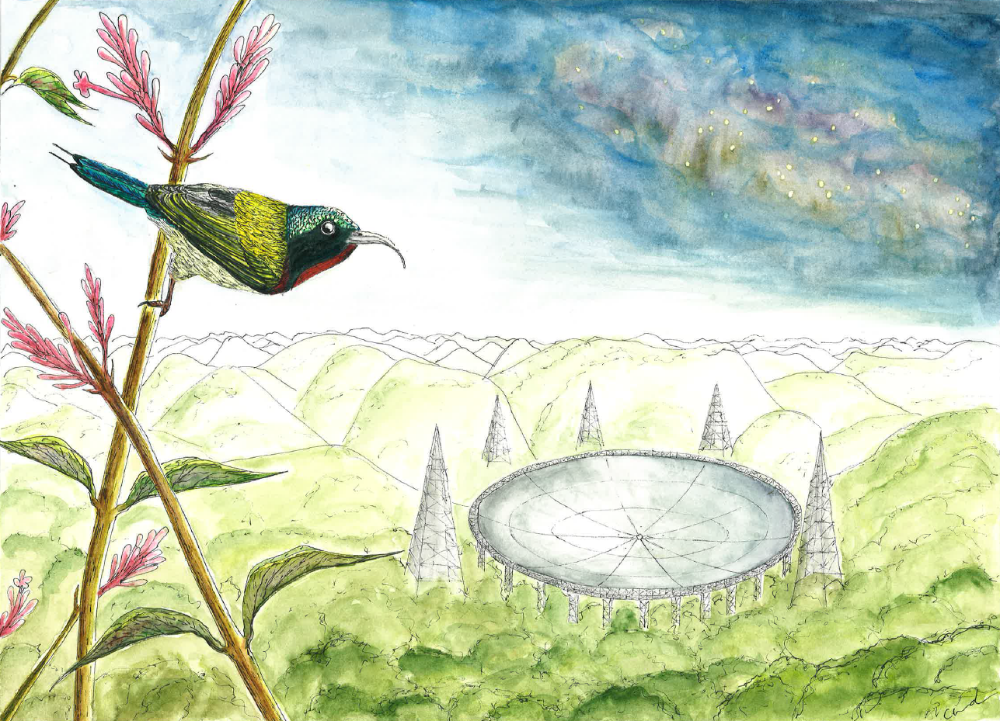

Charlotte Ward

Postdoctoral Research Associate Department of Astrophysical Sciences Princeton University
Publications (ADS)
Publications (ORCiD)
Princeton Webpage
Theme based on template from orderedlist
| Intro | Research | Outreach/EDI/Mentoring | Outside Astro | CV |
Outside of work, I'm usually busy either birdwatching, drawing, painting, rock climbing, or scuba diving. It's a lot of fun to be a 'citizen scientist' for local environmental conservation efforts (check out eBird or Frogwatch if you're interested in this stuff)!
